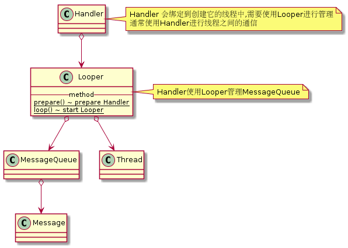
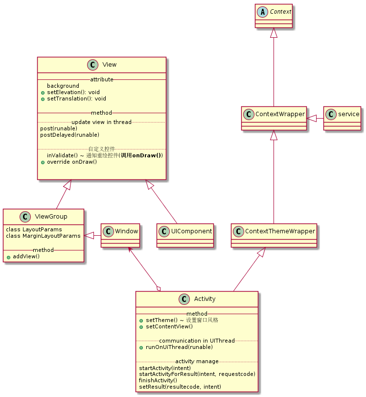

一般来说, Android事件处理的顺序为: 监听 ---> 回调(View方法里面的事件处理) --> Activity的事件处理
所有监听事件的返回值都是设置此监听事件是否被传播
setOn...Listener()
onKeyDown(): boolean
onKeyLongPress(): boolean
onKeyShortcut(): boolean
onKeyUp(): boolean
onTouchEvent(): booleana ~ toggled when user click it down or up
MotionEvent --|> class InputEvent
KeyEvent --|> class InputEvent
在Android中, 使用UI线程或者在创建UI控件时使用的线程才能更新UI控件 (Toast 不算在UI控件之中)


一个AsyncTask只能执行一次, 而且必须要在UI线程中调用
AsyncTask<params, progress, result>{
doInBackground()
onPostExecute(result)
onPreExecute()
onProgressUpdate(progress) ~ called when call publishProgress(progress)
}